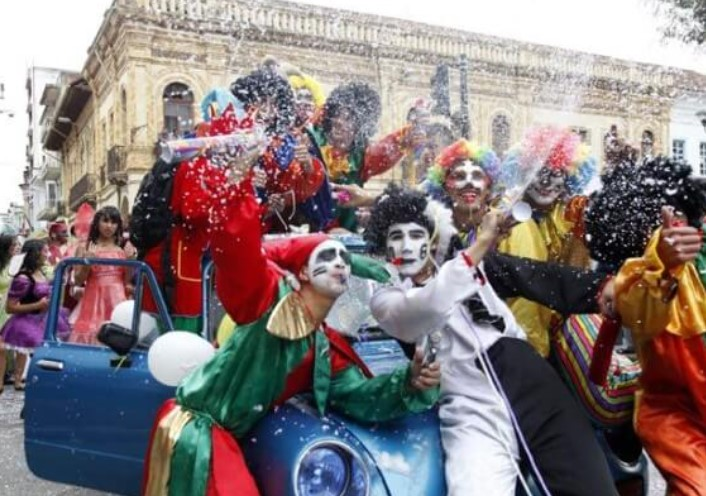
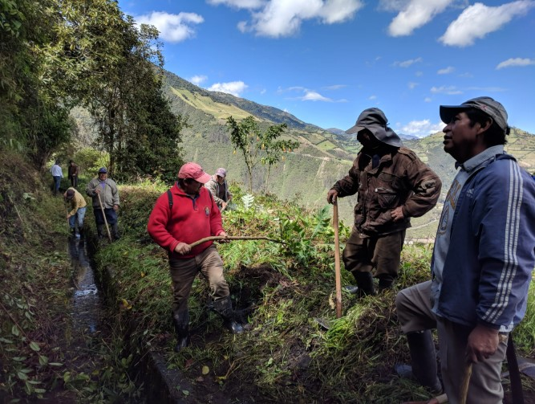
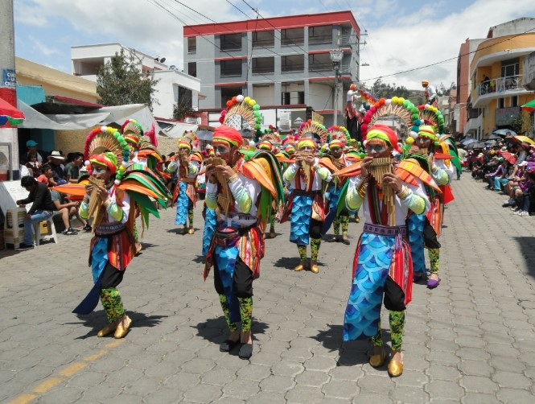
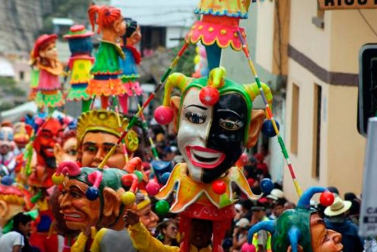
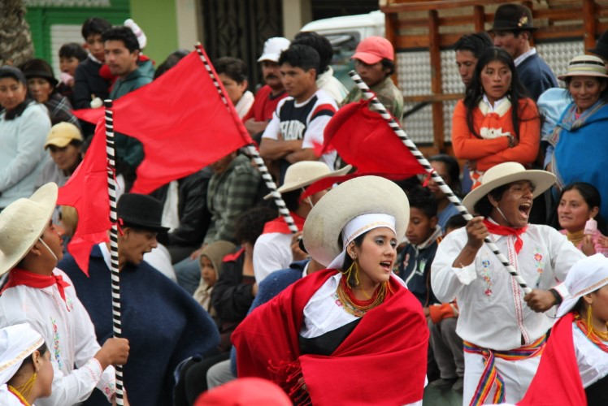
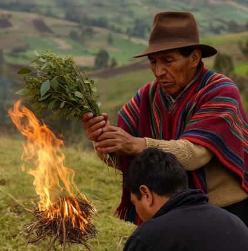

|  |
Carnaval de GuarandaFiesta tradicional llena de alegría, música, coplas, comparsas, agua, harina y espuma. El Taita Carnaval lidera la celebración. |
Mingas comunitariasSon jornadas de trabajo colectivo donde los vecinos se reúnen para mejorar caminos, limpiar áreas o ayudar a alguien de la comunidad. |
 |
|  |
Gastronomía típicaPlatos como el hornado, cuy, mote con chicharrón y bebidas como la chicha de jora y el pájaro azul son parte esencial de las celebraciones. |
Vestimenta tradicionalEl poncho, sombrero, anaco y zamarro son prendas usadas durante fiestas, especialmente por el Taita Carnaval y las carishinas. |
 |
|  |
Música y coplasLas fiestas se llenan de sanjuanitos, albazos y coplas improvisadas con instrumentos como rondador, guitarra y tambor. |
Limpias espiritualesSe realizan con plantas como ruda y eucalipto para alejar malas energías y atraer protección y buena salud. |
 |